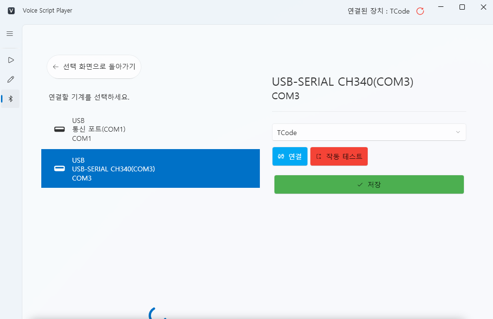

TCode Device Connection (Serial Device Setup)¶
1. Overview¶
VoiceScriptPlayer supports the TCode protocol,
allowing direct communication with USB or Serial (COM) devices.
This means the program communicates directly with the device — no Intiface required.
TCode connections are primarily used for:
- USB-Serial based DIY devices (e.g., OSR2, SR6)
- Arduino / ESP32-based TCode controllers
- Common USB-Serial chipsets such as CH340, CP210x, FTDI, etc.
2. Connection Steps¶
🖱️ Step 1 — Choose Connection Type¶
Launch VoiceScriptPlayer and click Device Connection from the left menu.
On the screen that says “Choose how to connect,” select Direct Connection.

💡 From left to right:
No Connection,Direct Connection,Intiface Central
For TCode devices, always select the Direct Connection option.
🔌 Step 2 — Select the Device to Connect¶
The next screen will display the list of available COM ports.

For USB devices, the port usually appears immediately after plugging in.
🔵 For Bluetooth connections, it may take about 5–10 seconds for the device name to appear.
Initially, it may show as a generic name like “Standard Bluetooth Serial Link (COMx).”
📷 Initial Display Example:

After a short delay, the Bluetooth device name will update to something like FUNSR1-15877.
📷 After Recognition:

⏳ Bluetooth connections may take extra time due to port initialization.
If the name doesn’t update, make sure the device is paired,
or reopen the list to refresh it.
⚙️ Step 3 — Configure Connection Settings¶
In the right panel, set Protocol Type to TCode,
then click the [Connect] button to open the port.

If the connection is successful, the Test Connection button will become available.
🔁 Step 4 — Test the Connection¶
Click the [Test Connection] button to make the device respond briefly and confirm communication.
If the test completes successfully, the [Save] button becomes enabled.
Make sure the device moves up and down about 3–4 times to confirm correct linkage.
Be aware that [Save] may still activate even if the wrong port is selected.

✅ Clicking Save will set the current connection as the default device.
The connection settings will be stored and automatically reloaded next time.
🟢 Step 5 — Verify Connection Status¶
Once setup is complete,
the top-right corner of the window will show Connected Device: TCode,
and the selected connection icon will have a green outline.

💡 A green outline indicates an active connection.
TCode commands from scripts and events will be transmitted instantly.
3. After Connection¶
- While connected, all TCode events and Stroke patterns are sent in real time.
- If the connection drops, the status indicator turns gray.
- The saved port will automatically reconnect on the next launch.
4. Troubleshooting¶
| Problem | Cause | Solution |
|---|---|---|
| Device not listed | Driver not installed | Install the proper serial driver via Device Manager |
| Connection fails | Port already in use | Check if another program (e.g., Intiface) is occupying the same port |
| No response to test | Baud rate mismatch or unsupported firmware | Verify the device’s firmware and communication settings |
| Disconnects immediately after connecting | Faulty cable or insufficient USB power | Try another USB port or use a powered USB hub |
5. Notes¶
- If you also use the same device with Intiface Central,
make sure only one application is running at a time to avoid port conflicts.